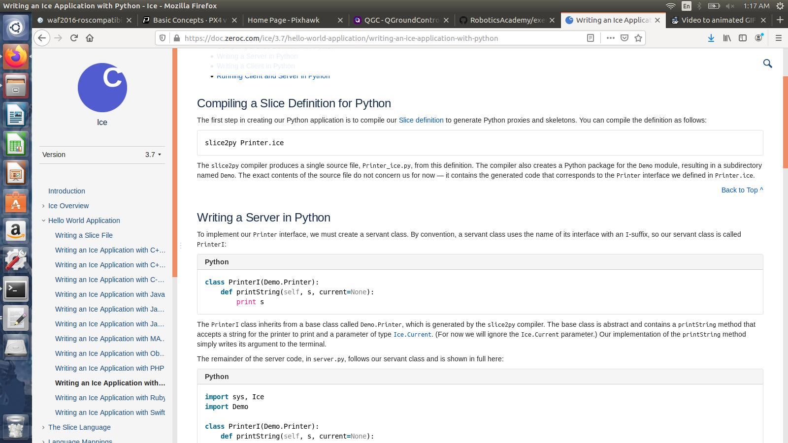

Many curious questions left at the end of this week. What is JDERobot exactly? How exactly to use the ICE Framework? Where is it being used in JDERobot?
The COOL part!

After merging of the pull request, I wanted to solve some other exercise, follow_road. Seeing unknown terms like mavros and PX4, my curious mind decided to read about it before working on solving the problem. So, here is what I read:
Unmanned robotic vehicles remotely or autonomously controlled are called drones. Since my birth ( or till heard the word ‘drone’ ), I considered only autonomous flying robots as a drone, but almost all vehicles, be it aerial, underwater or ground are considered drones.
Please Note that I will be using the word Drone for unmanned aerial vehicles, inspite of telling the difference in the first sentence.
Acurate and quick control are major concerns while controlling an aerial drone. Therefore, control of these drones require special software and hardware for appropriate control.
In a nutshell, the “brain” of the drone is called an autopilot. It consists of flight stack software running on the drone controller hardware. The drone controller hardware is given commands from another software called the Ground Control Station.

Pixhawk is one such open source hardware project that provides autopilot hardware designs. Pixhawk supports flight stacks such as PX4 or Ardupilot, that run on the OS NuttX.
MAVLink, Micro Air Vehicle is one of those protocols used for communicating with aerial drones, from a ground control station. Apart from commands, orientation of vehicle, GPS location and speed can be communicated to the drone as well.
QGroundControl is an example of a Ground Control Station that utilises MAVLink protocol, that runs on almost all platforms, be it Windows, Android or MacOS.
Loads of definitions! But, these are the practical aspects that are currently in use. Have to read about the basics as well in order to learn better about them.
Just for everyone’s information, the title of this blog is inspired from the movie SpiderMan: Far from Home, in which Tony Stark(Iron Man) developed a drone based project called EDITH. It was really fun reading about the autopilot systems as I was continously inspired by the thought of making such fiction come into life, hence the title.

Loads of Questions!
Another task I had this week, was to read about the Ice framework. JDERobot uses the ICE framework behind some of its applications, so this was a great thing to read about.
The journey started with this research-paper written by 2 great people. It was fun reading the paper, as I could understand it quite well. The paper involved the translation of existing JDERobot components to ROS based implementation. Now, on to Ice!
Ice by ZeroC is an RPC(Remote Procedure Call) based framework. What makes Ice useful are it’s object oriented client-server based applications. These client-server applications can be written in different languages, …a lot of different languages, C++, C#, Java, Javascript, Python and more(as written on the official website).
After this amount of theory, lets get practical now!

Getting practical started with looking at the documentation and some example codes of the project. But as everyone knows, only reading about implementation is whole lot different than using it in practical designs. Therefore, getting an overview was enough for now, the implementation will be learned with time.

Hence, I thought the best use case of this learning would be to see where and how is it being used in JDERobot. Quite a lot of searching the repository left me more curious, as I have still not figured out where Ice is being used! Hence, more reading and doubt clearance, will be the tasks for next week!